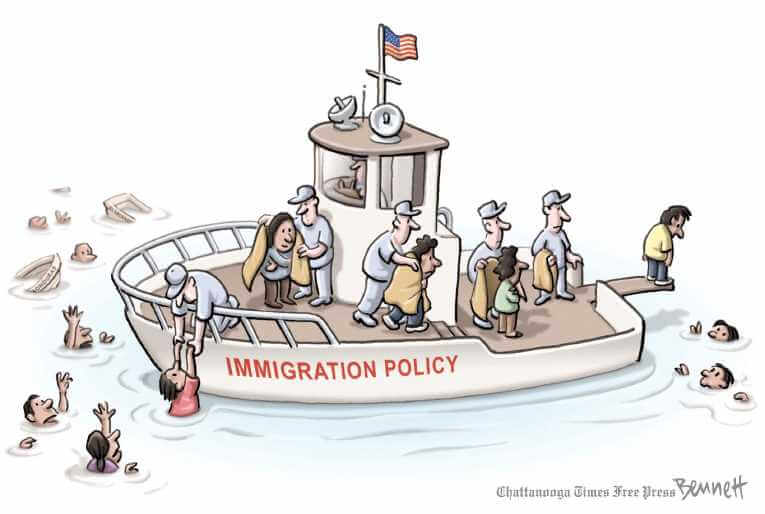
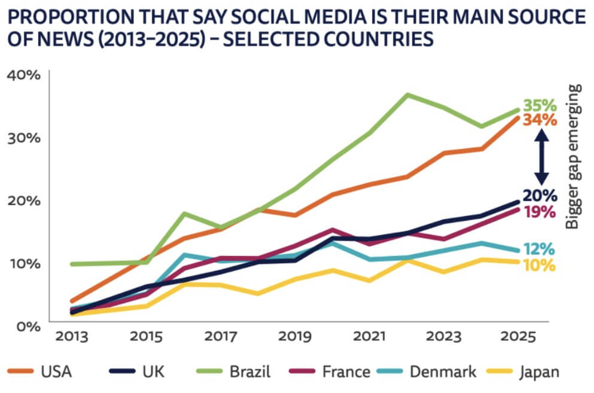

"Illegal Immigration Wave & Congress". Michael Ramirez.
Understanding the Threat Myth: The Real Roots of Anti-Immigrant Fear
The “threat myth” refers to the false and psychologically driven belief that immigrants endanger a nation’s economic stability, cultural identity, or social safety. Anti-immigrant sentiment in the United States is not based on actual threats from immigrants, but rather on deeply rooted psychological defenses and social anxieties.
Behind the Myth: Media Manipulation and False Narratives
Political Media from different eras show how the fears of immigrant ‘invasion’ are recurring issues that are often politically manipulated. By analyzing it can be discerned how manipulation of these issues and the spreading of false narratives can affect the general population's views on immigration and immigrants themselves.
Adam Zyglis. The Buffalo News.
The Human Cost: How the Threat Myth Shapes Policies and Lives
"Immigration Crisis Continues". 2014. Clay Bennett. Chattanooga Times Free Press
The emotional cost of Xenophobic Rhetoric can fuel internalized racism, fear of deportation, and struggles to balance cultural pride with the pressure to assimilate among immigrant communities. During his presidential campaign, President Donald Trump’s rhetoric, describing immigrants as “criminals,” “rapists,” and “terrorists,” exemplifies how leaders exploit these fears for power. Such language reinforces dissociation, a defense mechanism that allows people to view immigrants as threats rather than fellow human beings.
From Myth to Proof: Fact-Checking Dangerous Lies as a Civic Duty
Reuters.com
Anti-Immigration rhetoric often relies on emotions rather than evidence. In a political climate where fear is weaponized, fact-checking and critical inquiry become moral responsibilities. Truth, grounded in evidence and empathy, is the most effective defense against the lies that sustain racism and xenophobia. With the increased accessibility of technology, social media has become the main source of news for many.
Healing Through Understanding: A Call for Empathy
"Keep, ancient lands, your storied pomp!" cries she With silent lips. "Give me your tired, your poor, Your huddled masses yearning to breathe free, The wretched refuse of your teeming shore. Send these, the homeless, tempest-tost to me, I lift my lamp beside the golden door!"
"The New Colossus". Emma Lazarus. 1883.
Through collective and personal reckoning, society can fight back against false immigrant narratives. The path to healing lies in “witnessing and resisting injustice,” not in denying it. In confronting false narratives, we must learn to face the truths behind our defenses: fear of loss, guilt about privilege, and unresolved trauma.